Orb & Ink
発売中
新刊と次回作


世界 · 12
シリーズはそれぞれ独自の法則を持つ世界であり、専用サイトがあります。どうぞ中へ。


すべてのシリーズ · 12
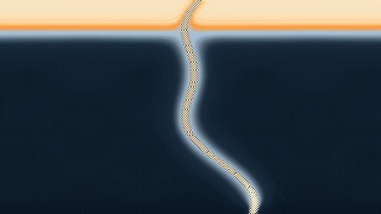
The Calorate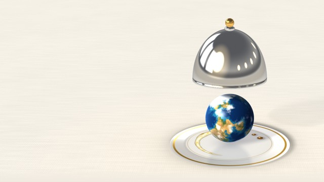
The Universal Menu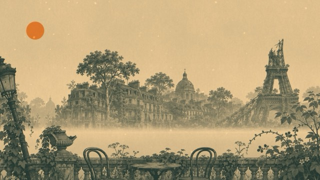
World Without Humans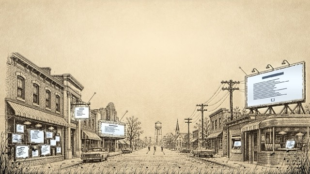
Terms & Conditions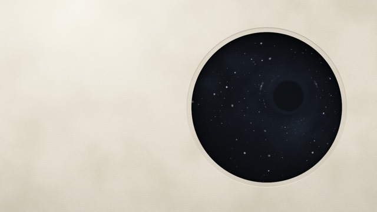
The Barycentric Creed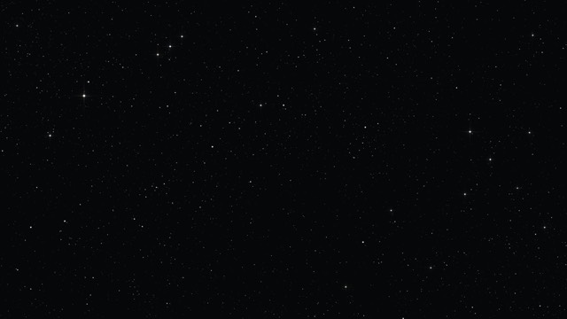
The Breathing Dark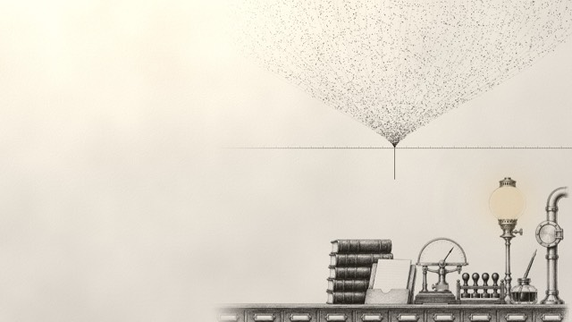
The Calculus of Fortune- The Drowned Houses
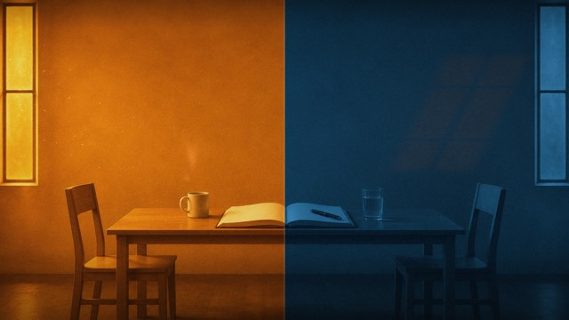
The Night Tenant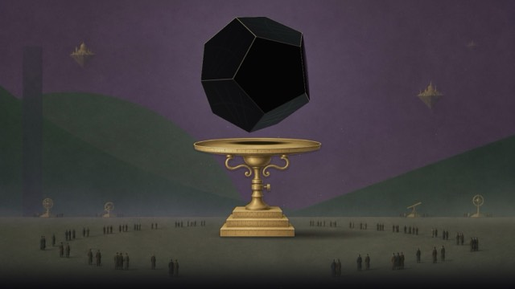
The Relic Protocol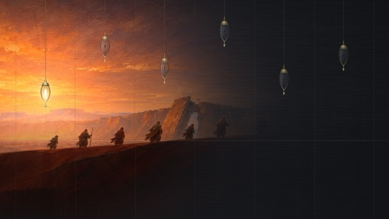
The Seventh Watch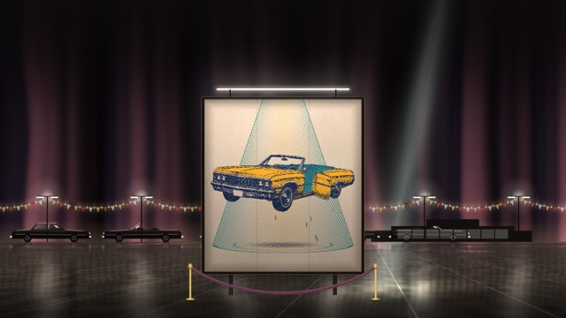
The Human Factor


書棚を見る
物語への五つの入口

四人の作家、四種類の物語
四人の作家、ひとつの出版社。
Orb & InkはSF専門の出版社。四人の作家が、奇妙な法則で動く世界を舞台にしたシリーズを書いている。